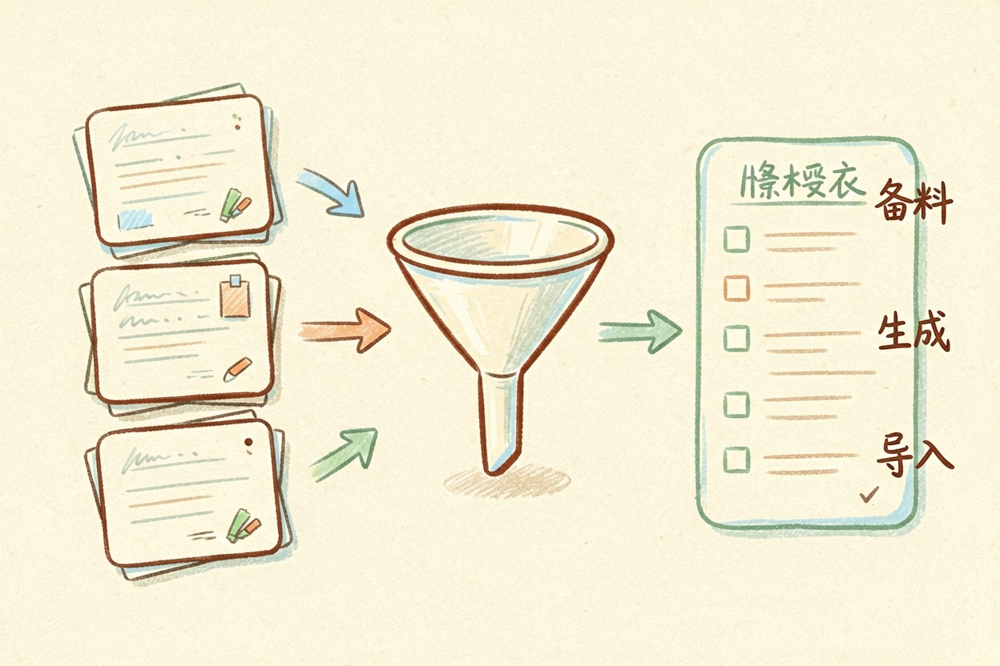
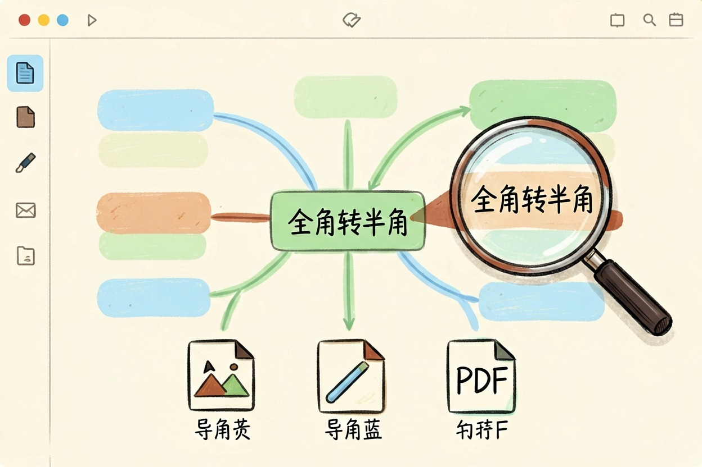

用 AI 做思维导图：从一团乱的笔记到一眼清的结构 — Learntide
脑子里一团乱的时候，最省事的办法是先让模型把层级拆出来，你只负责删减和排版。
ai做思维导图：值钱的一步是理结构

ai做思维导图，费脑子的从来是理结构，画图反倒容易。你把一堆素材丢过去，模型负责抽出主干、支线和叶子节点。你只做减法：留哪些、删哪些、谁该往上提一层。
很多人卡在空白画布前，半小时挤不出三个分支。让模型先出一版粗结构，哪怕只对六成，也比从零开始快。改比写省力，这是它最实在的价值。
举个具体点的例子。一篇八千字的行业报告，人读完再画图，起码一小时。丢给模型出大纲，两分钟拿到骨架，你再花十分钟改。省下的时间够你多读两篇。
三步走完整流程
整个流程就三步，不复杂。
- 备料。把笔记、会议记录、文章原文整理进一个文档，别只丢标题过去。
- 生成大纲。让模型输出 Markdown 多级列表，这是最通用的中转格式。
- 导入成图。粘进支持大纲导入的工具，节点自动生成，再手动调布局。
关键在第二步的约束怎么写。写得含糊，它就长出十几个平级枝杈。把层数、数量上限、节点字数都写死，结构立刻规整。
还有个小技巧。素材超过一万字就分批喂，一次给太多，模型容易只抓开头和结尾。分两三批出大纲，最后让它合并去重，效果更稳。
一条可直接复制的提示词

把主题和素材换成你自己的，整段发过去：
请把以下内容整理成思维导图大纲，用 Markdown 多级列表输出。
【粘贴你的笔记 / 文章 / 会议记录】
要求：
1 一级主题只留 3-5 个，同层之间不要交叉重复
2 每个一级下挂 2-4 个二级，必要时再展开一层三级
3 节点用名词短语，控制在 12 字以内，不要写成整句
4 层级用两个空格缩进表示，不要加编号和符号
5 末尾单独列出「最该优先做的 1 件事」，并说明理由觉得结果跑偏，就补一句受众和用途，比如「给不懂技术的同事看」。提示词的写法门道，ai提示词怎么写 里讲得更细。
从大纲到成图：导入与排版
拿到列表先自己读一遍。删掉重复项，把同类节点的说法统一，再动手导入。
多数思维导图工具支持文本大纲导入，缩进会自动转成层级。导入后做三件事：把最重要的分支挪到显眼位置、给同类节点上同一种颜色、折叠掉暂时用不到的三级节点。
有个细节容易忽略。模型给的缩进有时用的是全角空格或者制表符，导入前统一替换成半角空格，否则层级会塌成一层。
导出按用途选格式。汇报用图片，协作用工具原生链接，存档用 PDF。要接着写文档，直接把大纲复制走就行，AI 内容创作 里有配套的写作流程。
什么场景最适合，以及几个提醒
读长论文、整理会议纪要、拆项目排期，这三类最见效。共同点是信息多、结构不明、你又急着看全貌。梳理知识体系也合适，可以对着 AI 学习路径 排一版自己的进度图。
也有不适合的。需要严密因果推理的内容，导图会把逻辑链切碎。创意发散的最早阶段也别急着上工具，手写乱涂反而更容易蹦出新东西。
别把生成的结构当标准答案。模型只按字面归类，它并不知道你真正在意什么。图梳得顺不顺，说到底还是看 ai做思维导图时你有没有把素材和层级约束交代清楚。
本文信息核对于 2026-08-08。AI 产品的价格、免费额度与功能变动频繁，实际以各工具官网当前说明为准。